from packaging.version import Version
import sklearn
assert Version(sklearn.__version__) >= Version("1.6.1")5 - Scikit-Learn para clasificación
NotaAtribución
Este apunte es una traducción y leve adaptación de la notebook 03_classification.ipynb del repositorio ageron/handson-mlp, de Aurélien Géron. El material original se distribuye bajo la licencia Apache License 2.0. Esta versión explicita que fue traducida y adaptada para este curso.
También requiere Scikit-Learn ≥ 1.6.1:
MNIST
from sklearn.datasets import fetch_openml
mnist = fetch_openml("mnist_784", as_frame=False)# código extra – es un poco largo
print(mnist.DESCR)**Author**: Yann LeCun, Corinna Cortes, Christopher J.C. Burges
**Source**: [MNIST Website](http://yann.lecun.com/exdb/mnist/) - Date unknown
**Please cite**:
The MNIST database of handwritten digits with 784 features, raw data available at: http://yann.lecun.com/exdb/mnist/. It can be split in a training set of the first 60,000 examples, and a test set of 10,000 examples
It is a subset of a larger set available from NIST. The digits have been size-normalized and centered in a fixed-size image. It is a good database for people who want to try learning techniques and pattern recognition methods on real-world data while spending minimal efforts on preprocessing and formatting. The original black and white (bilevel) images from NIST were size normalized to fit in a 20x20 pixel box while preserving their aspect ratio. The resulting images contain grey levels as a result of the anti-aliasing technique used by the normalization algorithm. the images were centered in a 28x28 image by computing the center of mass of the pixels, and translating the image so as to position this point at the center of the 28x28 field.
With some classification methods (particularly template-based methods, such as SVM and K-nearest neighbors), the error rate improves when the digits are centered by bounding box rather than center of mass. If you do this kind of pre-processing, you should report it in your publications. The MNIST database was constructed from NIST's NIST originally designated SD-3 as their training set and SD-1 as their test set. However, SD-3 is much cleaner and easier to recognize than SD-1. The reason for this can be found on the fact that SD-3 was collected among Census Bureau employees, while SD-1 was collected among high-school students. Drawing sensible conclusions from learning experiments requires that the result be independent of the choice of training set and test among the complete set of samples. Therefore it was necessary to build a new database by mixing NIST's datasets.
The MNIST training set is composed of 30,000 patterns from SD-3 and 30,000 patterns from SD-1. Our test set was composed of 5,000 patterns from SD-3 and 5,000 patterns from SD-1. The 60,000 pattern training set contained examples from approximately 250 writers. We made sure that the sets of writers of the training set and test set were disjoint. SD-1 contains 58,527 digit images written by 500 different writers. In contrast to SD-3, where blocks of data from each writer appeared in sequence, the data in SD-1 is scrambled. Writer identities for SD-1 is available and we used this information to unscramble the writers. We then split SD-1 in two: characters written by the first 250 writers went into our new training set. The remaining 250 writers were placed in our test set. Thus we had two sets with nearly 30,000 examples each. The new training set was completed with enough examples from SD-3, starting at pattern # 0, to make a full set of 60,000 training patterns. Similarly, the new test set was completed with SD-3 examples starting at pattern # 35,000 to make a full set with 60,000 test patterns. Only a subset of 10,000 test images (5,000 from SD-1 and 5,000 from SD-3) is available on this site. The full 60,000 sample training set is available.
Downloaded from openml.org.mnist.keys() # código extra – en este notebook solo usamos data y targetdict_keys(['data', 'target', 'frame', 'categories', 'feature_names', 'target_names', 'DESCR', 'details', 'url'])X, y = mnist.data, mnist.target
Xarray([[0, 0, 0, ..., 0, 0, 0],
[0, 0, 0, ..., 0, 0, 0],
[0, 0, 0, ..., 0, 0, 0],
...,
[0, 0, 0, ..., 0, 0, 0],
[0, 0, 0, ..., 0, 0, 0],
[0, 0, 0, ..., 0, 0, 0]], shape=(70000, 784))X.shape(70000, 784)yarray(['5', '0', '4', ..., '4', '5', '6'], shape=(70000,), dtype=object)y.shape(70000,)28 * 28784import matplotlib.pyplot as plt
def plot_digit(image_data):
image = image_data.reshape(28, 28)
plt.imshow(image, cmap="binary")
plt.axis("off")
some_digit = X[0]
plot_digit(some_digit);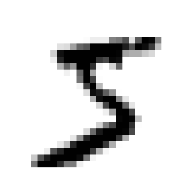
y[0]'5'# código extra – esta celda genera la Figura 3–2
plt.figure(figsize=(9, 9))
for idx, image_data in enumerate(X[:100]):
plt.subplot(10, 10, idx + 1)
plot_digit(image_data)
plt.subplots_adjust(wspace=0, hspace=0)
plt.show()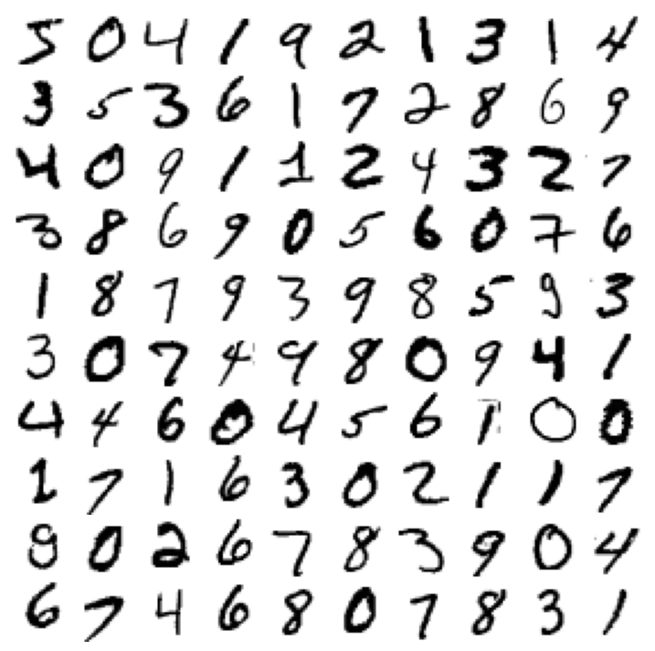
X_train, X_test, y_train, y_test = X[:60000], X[60000:], y[:60000], y[60000:]Entrenamiento de un clasificador binario
y_train_5 = y_train == "5" # True para todos los 5, False para todos los demás dígitos
y_test_5 = y_test == "5"from sklearn.linear_model import SGDClassifier
sgd_clf = SGDClassifier(random_state=42)
sgd_clf.fit(X_train, y_train_5)SGDClassifier(random_state=42)In a Jupyter environment, please rerun this cell to show the HTML representation or trust the notebook.
On GitHub, the HTML representation is unable to render, please try loading this page with nbviewer.org.
Parameters
sgd_clf.predict([some_digit])array([ True])Métricas de desempeño
Medición de la exactitud usando cross-validation
from sklearn.model_selection import cross_val_score
cross_val_score(sgd_clf, X_train, y_train_5, cv=3, scoring="accuracy")array([0.95035, 0.96035, 0.9604 ])from sklearn.model_selection import StratifiedKFold
from sklearn.base import clone
skfolds = StratifiedKFold(n_splits=3) # agregar shuffle=True si el dataset no está mezclado
for train_index, test_index in skfolds.split(X_train, y_train_5):
clone_clf = clone(sgd_clf)
X_train_folds = X_train[train_index]
y_train_folds = y_train_5[train_index]
X_test_fold = X_train[test_index]
y_test_fold = y_train_5[test_index]
clone_clf.fit(X_train_folds, y_train_folds)
y_pred = clone_clf.predict(X_test_fold)
n_correct = sum(y_pred == y_test_fold)
print(n_correct / len(y_pred))0.95035
0.96035
0.9604from sklearn.dummy import DummyClassifier
dummy_clf = DummyClassifier()
dummy_clf.fit(X_train, y_train_5)
print(any(dummy_clf.predict(X_train)))Falsecross_val_score(dummy_clf, X_train, y_train_5, cv=3, scoring="accuracy")array([0.90965, 0.90965, 0.90965])Matriz de confusión
from sklearn.model_selection import cross_val_predict
y_train_pred = cross_val_predict(sgd_clf, X_train, y_train_5, cv=3)from sklearn.metrics import confusion_matrix
cm = confusion_matrix(y_train_5, y_train_pred)
cmarray([[53892, 687],
[ 1891, 3530]])y_train_perfect_predictions = y_train_5 # supongamos que alcanzamos la perfección
confusion_matrix(y_train_5, y_train_perfect_predictions)array([[54579, 0],
[ 0, 5421]])Precision y Recall
from sklearn.metrics import precision_score, recall_score
precision_score(y_train_5, y_train_pred) # == 3530 / (687 + 3530)0.8370879772350012# código extra – esta celda también calcula la precision: TP / (FP + TP)
cm[1, 1] / (cm[0, 1] + cm[1, 1])np.float64(0.8370879772350012)recall_score(y_train_5, y_train_pred) # == 3530 / (1891 + 3530)0.6511713705958311# código extra – esta celda también calcula el recall: TP / (FN + TP)
cm[1, 1] / (cm[1, 0] + cm[1, 1])np.float64(0.6511713705958311)from sklearn.metrics import f1_score
f1_score(y_train_5, y_train_pred)0.7325171197343847# código extra – esta celda también calcula el puntaje f1
cm[1, 1] / (cm[1, 1] + (cm[1, 0] + cm[0, 1]) / 2)np.float64(0.7325171197343847)Trade-off entre Precision y Recall
y_scores = sgd_clf.decision_function([some_digit])
y_scoresarray([2164.22030239])threshold = 0
y_some_digit_pred = y_scores > thresholdy_some_digit_predarray([ True])# código extra – solo muestra que y_scores > 0 produce el mismo resultado que
# llamar a predict()
y_scores > 0array([ True])threshold = 3000
y_some_digit_pred = y_scores > threshold
y_some_digit_predarray([False])y_scores = cross_val_predict(
sgd_clf, X_train, y_train_5, cv=3, method="decision_function"
)from sklearn.metrics import precision_recall_curve
precisions, recalls, thresholds = precision_recall_curve(y_train_5, y_scores)plt.figure(figsize=(8, 4)) # código extra – no hace falta, es solo formato
plt.plot(thresholds, precisions[:-1], "b--", label="Precision", linewidth=2)
plt.plot(thresholds, recalls[:-1], "g-", label="Recall", linewidth=2)
plt.vlines(threshold, 0, 1.0, "k", "dotted", label="umbral")
# código extra – esta sección solo embellece la Figura 3–5
idx = (thresholds >= threshold).argmax() # primer índice ≥ umbral
plt.plot(thresholds[idx], precisions[idx], "bo")
plt.plot(thresholds[idx], recalls[idx], "go")
plt.axis([-50000, 50000, 0, 1])
plt.grid()
plt.xlabel("Umbral")
plt.legend(loc="center right");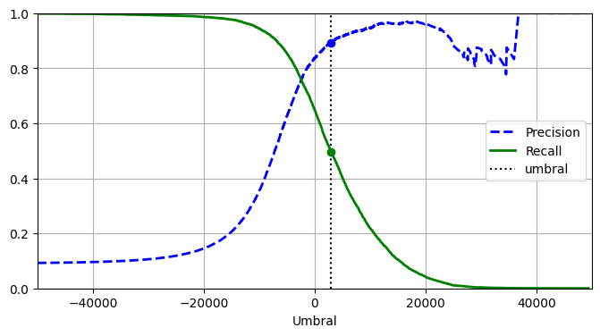
import matplotlib.patches as patches # código extra – para la flecha curva
plt.figure(figsize=(6, 5)) # código extra – no hace falta, es solo formato
plt.plot(recalls, precisions, linewidth=2, label="Curva Precision/Recall")
# código extra – solo embellece la Figura 3–6
plt.plot([recalls[idx], recalls[idx]], [0.0, precisions[idx]], "k:")
plt.plot([0.0, recalls[idx]], [precisions[idx], precisions[idx]], "k:")
plt.plot([recalls[idx]], [precisions[idx]], "ko", label="Punto con umbral 3.000")
plt.gca().add_patch(
patches.FancyArrowPatch(
(0.79, 0.60),
(0.61, 0.78),
connectionstyle="arc3,rad=.2",
arrowstyle="Simple, tail_width=1.5, head_width=8, head_length=10",
color="#444444",
)
)
plt.text(0.56, 0.62, "Umbral\nmás alto", color="#333333")
plt.xlabel("Recall")
plt.ylabel("Precision")
plt.axis([0, 1, 0, 1])
plt.grid()
plt.legend(loc="lower left");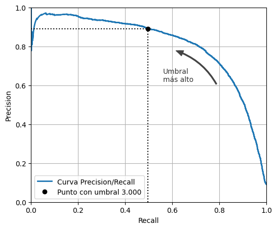
idx_for_90_precision = (precisions >= 0.90).argmax()
threshold_for_90_precision = thresholds[idx_for_90_precision]
threshold_for_90_precisionnp.float64(3370.0194991439557)y_train_pred_90 = y_scores >= threshold_for_90_precisionprecision_score(y_train_5, y_train_pred_90)0.9000345901072293recall_at_90_precision = recall_score(y_train_5, y_train_pred_90)
recall_at_90_precision0.4799852425751706La curva ROC
from sklearn.metrics import roc_curve
fpr, tpr, thresholds = roc_curve(y_train_5, y_scores)idx_for_threshold_at_90 = (thresholds <= threshold_for_90_precision).argmax()
tpr_90, fpr_90 = tpr[idx_for_threshold_at_90], fpr[idx_for_threshold_at_90]
plt.figure(figsize=(6, 5)) # código extra – no hace falta, es solo formato
plt.plot(fpr, tpr, linewidth=2, label="Curva ROC")
plt.plot([0, 1], [0, 1], "k:", label="Curva ROC de un clasificador aleatorio")
plt.plot([fpr_90], [tpr_90], "ko", label="Umbral para 90% de precision")
# código extra – solo embellece la Figura 3–7
plt.gca().add_patch(
patches.FancyArrowPatch(
(0.20, 0.89),
(0.07, 0.70),
connectionstyle="arc3,rad=.4",
arrowstyle="Simple, tail_width=1.5, head_width=8, head_length=10",
color="#444444",
)
)
plt.text(0.12, 0.71, "Umbral\nmás alto", color="#333333")
plt.xlabel("Tasa de falsos positivos (Fall-Out)")
plt.ylabel("Tasa de verdaderos positivos (Recall)")
plt.grid()
plt.axis([0, 1, 0, 1])
plt.legend(loc="lower right", fontsize=13)
plt.show()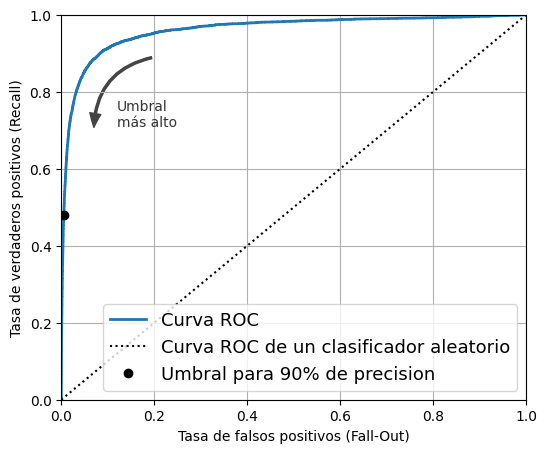
from sklearn.metrics import roc_auc_score
roc_auc_score(y_train_5, y_scores)0.9604938554008616Advertencia: la siguiente celda puede tardar unos minutos en ejecutarse.
from sklearn.ensemble import RandomForestClassifier
forest_clf = RandomForestClassifier(random_state=42)y_probas_forest = cross_val_predict(
forest_clf, X_train, y_train_5, cv=3, method="predict_proba"
)y_probas_forest[:2]array([[0.11, 0.89],
[0.99, 0.01]])Estas son probabilidades estimadas. Entre las imágenes que el modelo clasificó como positivas con una probabilidad entre 50% y 60%, en realidad hay alrededor de un 94% de imágenes positivas:
# No está en el código
idx_50_to_60 = (y_probas_forest[:, 1] > 0.50) & (y_probas_forest[:, 1] < 0.60)
print(f"{(y_train_5[idx_50_to_60]).sum() / idx_50_to_60.sum():.1%}")94.0%y_scores_forest = y_probas_forest[:, 1]
precisions_forest, recalls_forest, thresholds_forest = precision_recall_curve(
y_train_5, y_scores_forest
)plt.figure(figsize=(6, 5)) # código extra – no hace falta, es solo formato
plt.plot(recalls_forest, precisions_forest, "b-", linewidth=2, label="Random Forest")
plt.plot(recalls, precisions, "--", linewidth=2, label="SGD")
# código extra – solo embellece la Figura 3–8
plt.xlabel("Recall")
plt.ylabel("Precision")
plt.axis([0, 1, 0, 1])
plt.grid()
plt.legend(loc="lower left");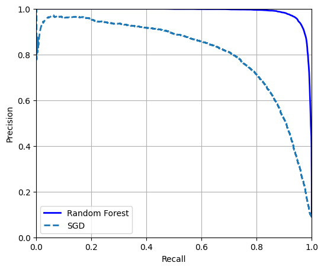
Podríamos usar cross_val_predict(forest_clf, X_train, y_train_5, cv=3) para calcular y_train_pred_forest, pero como ya tenemos las probabilidades estimadas, podemos simplemente usar el umbral predeterminado de 50% de probabilidad para obtener las mismas predicciones mucho más rápido:
y_train_pred_forest = y_probas_forest[:, 1] >= 0.5 # proba positiva ≥ 50%
f1_score(y_train_5, y_train_pred_forest)0.9274509803921569roc_auc_score(y_train_5, y_scores_forest)0.9983436731328145precision_score(y_train_5, y_train_pred_forest)0.9897468089558485recall_score(y_train_5, y_train_pred_forest)0.8725327430363402Clasificación multiclase
Los SVM no escalan bien con datasets grandes, así que entrenemos solo con las primeras 2.000 instancias; de lo contrario, esta sección tardará muchísimo en ejecutarse:
from sklearn.svm import SVC
svm_clf = SVC(random_state=42)
svm_clf.fit(X_train[:2000], y_train[:2000]) # y_train, no y_train_5SVC(random_state=42)In a Jupyter environment, please rerun this cell to show the HTML representation or trust the notebook.
On GitHub, the HTML representation is unable to render, please try loading this page with nbviewer.org.
Parameters
svm_clf.predict([some_digit])array(['5'], dtype=object)some_digit_scores = svm_clf.decision_function([some_digit])
some_digit_scores.round(2)array([[ 3.79, 0.73, 6.06, 8.3 , -0.29, 9.3 , 1.75, 2.77, 7.21,
4.82]])class_id = some_digit_scores.argmax()
class_idnp.int64(5)svm_clf.classes_array(['0', '1', '2', '3', '4', '5', '6', '7', '8', '9'], dtype=object)svm_clf.classes_[class_id]'5'Si querés que decision_function() devuelva los 45 puntajes, podés establecer el hiperparámetro decision_function_shape en "ovo". El valor predeterminado es "ovr", pero no dejes que eso te confunda: SVC siempre usa OvO para entrenar. Este hiperparámetro solo afecta si los 45 puntajes se agregan o no:
# código extra – muestra cómo obtener los 45 puntajes OvO si hace falta
svm_clf.decision_function_shape = "ovo"
some_digit_scores_ovo = svm_clf.decision_function([some_digit])
some_digit_scores_ovo.round(2)array([[ 0.11, -0.21, -0.97, 0.51, -1.01, 0.19, 0.09, -0.31, -0.04,
-0.45, -1.28, 0.25, -1.01, -0.13, -0.32, -0.9 , -0.36, -0.93,
0.79, -1. , 0.45, 0.24, -0.24, 0.25, 1.54, -0.77, 1.11,
1.13, 1.04, 1.2 , -1.42, -0.53, -0.45, -0.99, -0.95, 1.21,
1. , 1. , 1.08, -0.02, -0.67, -0.14, -0.3 , -0.13, 0.25]])from sklearn.multiclass import OneVsRestClassifier
ovr_clf = OneVsRestClassifier(SVC(random_state=42))
ovr_clf.fit(X_train[:2000], y_train[:2000])OneVsRestClassifier(estimator=SVC(random_state=42))In a Jupyter environment, please rerun this cell to show the HTML representation or trust the notebook.
On GitHub, the HTML representation is unable to render, please try loading this page with nbviewer.org.
Parameters
SVC(random_state=42)
Parameters
ovr_clf.predict([some_digit])array(['5'], dtype='<U1')len(ovr_clf.estimators_)10sgd_clf = SGDClassifier(random_state=42)
sgd_clf.fit(X_train, y_train)
sgd_clf.predict([some_digit])array(['3'], dtype='<U1')sgd_clf.decision_function([some_digit]).round()array([[-31893., -19048., -9531., 1824., -22320., -1386., -26189.,
-16148., -4604., -12051.]])Advertencia: las dos celdas siguientes pueden tardar unos minutos cada una en ejecutarse:
cross_val_score(sgd_clf, X_train, y_train, cv=3, scoring="accuracy")array([0.87745, 0.85835, 0.8698 ])from sklearn.preprocessing import StandardScaler
scaler = StandardScaler()
X_train_scaled = scaler.fit_transform(X_train.astype("float64"))
cross_val_score(sgd_clf, X_train_scaled, y_train, cv=3, scoring="accuracy")/home/tomas/miniconda3/lib/python3.13/site-packages/sklearn/linear_model/_stochastic_gradient.py:733: ConvergenceWarning: Maximum number of iteration reached before convergence. Consider increasing max_iter to improve the fit.
warnings.warn(
/home/tomas/miniconda3/lib/python3.13/site-packages/sklearn/linear_model/_stochastic_gradient.py:733: ConvergenceWarning: Maximum number of iteration reached before convergence. Consider increasing max_iter to improve the fit.
warnings.warn(
/home/tomas/miniconda3/lib/python3.13/site-packages/sklearn/linear_model/_stochastic_gradient.py:733: ConvergenceWarning: Maximum number of iteration reached before convergence. Consider increasing max_iter to improve the fit.
warnings.warn(array([0.89835, 0.8902 , 0.90095])Análisis de errores
Advertencia: la siguiente celda tardará unos minutos en ejecutarse:
from sklearn.metrics import ConfusionMatrixDisplay
y_train_pred = cross_val_predict(sgd_clf, X_train_scaled, y_train, cv=3)
ConfusionMatrixDisplay.from_predictions(y_train, y_train_pred);/home/tomas/miniconda3/lib/python3.13/site-packages/sklearn/linear_model/_stochastic_gradient.py:733: ConvergenceWarning: Maximum number of iteration reached before convergence. Consider increasing max_iter to improve the fit.
warnings.warn(
/home/tomas/miniconda3/lib/python3.13/site-packages/sklearn/linear_model/_stochastic_gradient.py:733: ConvergenceWarning: Maximum number of iteration reached before convergence. Consider increasing max_iter to improve the fit.
warnings.warn(
/home/tomas/miniconda3/lib/python3.13/site-packages/sklearn/linear_model/_stochastic_gradient.py:733: ConvergenceWarning: Maximum number of iteration reached before convergence. Consider increasing max_iter to improve the fit.
warnings.warn(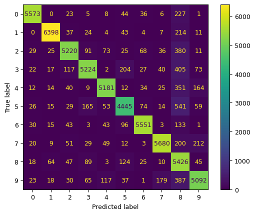
ConfusionMatrixDisplay.from_predictions(y_train, y_train_pred, normalize="true", values_format=".0%");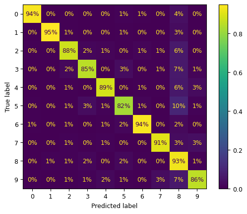
sample_weight = y_train_pred != y_train
ConfusionMatrixDisplay.from_predictions(
y_train,
y_train_pred,
sample_weight=sample_weight,
normalize="true",
values_format=".0%",
);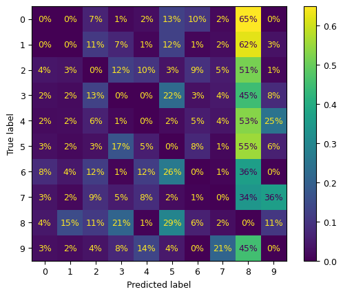
Pongamos todos los gráficos en un par de figuras para el libro:
fig, axs = plt.subplots(nrows=1, ncols=2, figsize=(12, 5))
ConfusionMatrixDisplay.from_predictions(y_train, y_train_pred, ax=axs[0])
ConfusionMatrixDisplay.from_predictions(
y_train, y_train_pred, ax=axs[1], normalize="true", values_format=".0%"
)
axs[0].set_title("Matriz de confusión")
axs[1].set_title("MC normalizada por fila");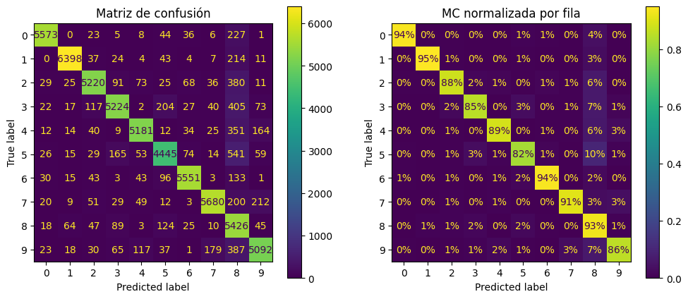
# código extra – esta celda genera la Figura 3–10
fig, axs = plt.subplots(nrows=1, ncols=2, figsize=(15, 5))
ConfusionMatrixDisplay.from_predictions(
y_train,
y_train_pred,
ax=axs[0],
sample_weight=sample_weight,
normalize="true",
values_format=".0%",
)
ConfusionMatrixDisplay.from_predictions(
y_train,
y_train_pred,
ax=axs[1],
sample_weight=sample_weight,
normalize="pred",
values_format=".0%",
)
axs[0].set_title("Errores normalizados por fila")
axs[1].set_title("Errores normalizados por columna");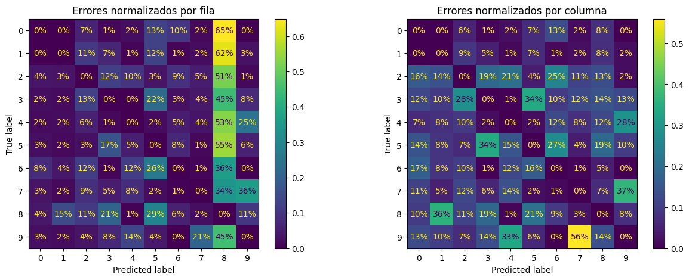
cl_a, cl_b = "3", "5"
X_aa = X_train[(y_train == cl_a) & (y_train_pred == cl_a)]
X_ab = X_train[(y_train == cl_a) & (y_train_pred == cl_b)]
X_ba = X_train[(y_train == cl_b) & (y_train_pred == cl_a)]
X_bb = X_train[(y_train == cl_b) & (y_train_pred == cl_b)]# código extra – esta celda genera la Figura 3–11
size = 5
pad = 0.2
plt.figure(figsize=(size, size))
for images, (label_col, label_row) in [
(X_ba, (0, 0)),
(X_bb, (1, 0)),
(X_aa, (0, 1)),
(X_ab, (1, 1)),
]:
for idx, image_data in enumerate(images[: size * size]):
x = idx % size + label_col * (size + pad)
y = idx // size + label_row * (size + pad)
plt.imshow(
image_data.reshape(28, 28), cmap="binary", extent=(x, x + 1, y, y + 1)
)
plt.xticks([size / 2, size + pad + size / 2], [str(cl_a), str(cl_b)])
plt.yticks([size / 2, size + pad + size / 2], [str(cl_b), str(cl_a)])
plt.plot([size + pad / 2, size + pad / 2], [0, 2 * size + pad], "k:")
plt.plot([0, 2 * size + pad], [size + pad / 2, size + pad / 2], "k:")
plt.axis([0, 2 * size + pad, 0, 2 * size + pad])
plt.xlabel("Etiqueta predicha")
plt.ylabel("Etiqueta real");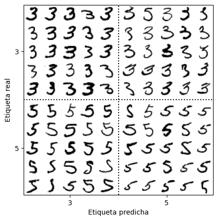
Nota: hay varias otras formas de programar un gráfico como este, pero es un poco difícil lograr que las etiquetas de los ejes queden bien: * usando GridSpecs anidados * fusionando todos los dígitos de cada bloque en una sola imagen (y luego usando subplots de 2×2). Por ejemplo: python X_aa[:25].reshape(5, 5, 28, 28).transpose(0, 2, 1, 3).reshape(5 * 28, 5 * 28) * usando subfigures (desde Matplotlib 3.4)
Clasificación multilabel
import numpy as np
from sklearn.neighbors import KNeighborsClassifier
y_train_large = y_train >= "7"
y_train_odd = y_train.astype("int8") % 2 == 1
y_multilabel = np.c_[y_train_large, y_train_odd]
knn_clf = KNeighborsClassifier()
knn_clf.fit(X_train, y_multilabel)KNeighborsClassifier()In a Jupyter environment, please rerun this cell to show the HTML representation or trust the notebook.
On GitHub, the HTML representation is unable to render, please try loading this page with nbviewer.org.
Parameters
knn_clf.predict([some_digit])array([[False, True]])Advertencia: la siguiente celda puede tardar unos minutos en ejecutarse:
y_train_knn_pred = cross_val_predict(knn_clf, X_train, y_multilabel, cv=3)
f1_score(y_multilabel, y_train_knn_pred, average="macro")0.9764102655606048# código extra – muestra que obtenemos una mejora de desempeño despreciable al
# establecer average="weighted" porque las clases ya están bastante
# bien balanceadas.
f1_score(y_multilabel, y_train_knn_pred, average="weighted")0.9778357403921755from sklearn.multioutput import ClassifierChain
chain_clf = ClassifierChain(SVC(), cv=3, random_state=42)
chain_clf.fit(X_train[:2000], y_multilabel[:2000])ClassifierChain(cv=3, estimator=SVC(), random_state=42)In a Jupyter environment, please rerun this cell to show the HTML representation or trust the notebook.
On GitHub, the HTML representation is unable to render, please try loading this page with nbviewer.org.
Parameters
SVC()
Parameters
chain_clf.predict([some_digit])array([[0., 1.]])Clasificación multioutput
rng = np.random.default_rng(seed=42) # para hacer este ejemplo de código reproducible
noise_train = rng.integers(0, 100, (len(X_train), 784))
X_train_mod = X_train + noise_train
noise_test = rng.integers(0, 100, (len(X_test), 784))
X_test_mod = X_test + noise_test
y_train_mod = X_train
y_test_mod = X_test# código extra – esta celda genera la Figura 3–12
plt.subplot(121)
plot_digit(X_test_mod[0])
plt.subplot(122)
plot_digit(y_test_mod[0]);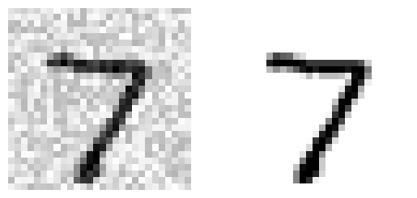
knn_clf = KNeighborsClassifier()
knn_clf.fit(X_train_mod, y_train_mod)
clean_digit = knn_clf.predict([X_test_mod[0]])
plot_digit(clean_digit);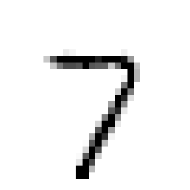